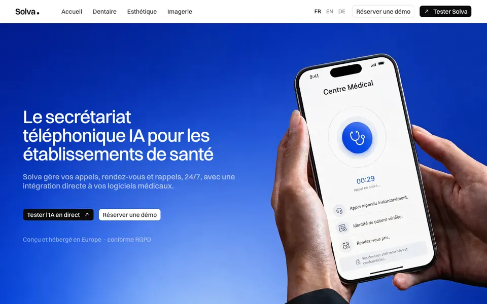
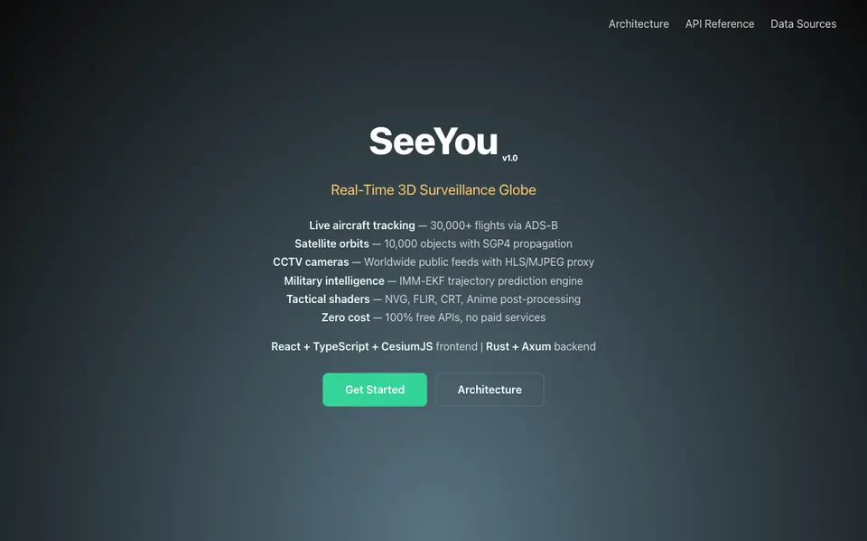

IDENTIFICATION DIVISION.
Theo Sanz
Développeur à Montpellier, co-fondateur de Solva, un secrétariat téléphonique IA pour établissements de santé. En alternance chez Dernier Cri comme Generative AI Engineer, formé au développement web via OpenClassrooms.
- Poste Co-fondateur, Solva
- Alternance Dernier Cri, Montpellier
- Formation Développeur web, OpenClassrooms
- Terrain Agents IA, voix temps réel, sécurité
01 À propos — qui je suis, en six temps
Développeur à Montpellier
Développeur à Montpellier. Je construis des systèmes agentiques et des produits IA de bout en bout — du backend Rust temps réel à l'agent vocal qui décroche vraiment le téléphone.
Parcours et légitimité
Je code depuis la sixième, au collège — bien avant d'avoir un compte GitHub. Mon compte public ne remonte qu'à fin 2024 : c'est la date où j'ai commencé à publier, pas à coder. D'abord des sites clients en freelance sous SANZ CLOUD, puis des produits de plus en plus ambitieux : un SaaS de révision pour étudiants, une plateforme de renseignement géospatial temps réel, un agent vocal pour cabinets de santé. La formation OpenClassrooms est venue après des années de pratique, pour valider un socle déjà écrit, pas pour l'ouvrir.
Stack technique
TypeScript et Python au quotidien, Rust quand la brique doit tenir la charge. Sur SeeYou, projet personnel de renseignement géospatial, j'ai écrit un backend Rust/Axum de 24 crates qui interroge plus de 25 API publiques, met en cache dans Redis et diffuse en WebSocket vers un frontend React/CesiumJS, avec prédiction de trajectoire par filtre de Kalman multi-modèle. Sur Solva, j'assemble une chaîne voix complète en production : LiveKit Agents, STT Soniox, LLM interchangeable, TTS Cartesia ou ElevenLabs.
Projets et impact
Solva est mon projet central : un secrétariat téléphonique IA pour établissements de santé, en production, avec un dashboard SaaS et un agent vocal capable de vérifier une identité patient, détecter une urgence et basculer entre français, anglais et allemand. À côté, SeeYou démontre une architecture temps réel complète pour zéro euro d'infrastructure, uniquement avec des API publiques gratuites.
Approche et sécurité
La sécurité n'attend pas le contexte réglementé. Sur mon projet de formation Mon Vieux Grimoire, le userId n'est jamais lu depuis le corps de la requête, précisément pour rendre l'usurpation impossible — un réflexe qu'on retrouve sur mes projets professionnels. Quand Pennote n'a pas trouvé son marché, je l'ai écrit noir sur blanc dans le README et ai ouvert le code sous AGPLv3 plutôt que de le laisser mourir en privé. Je préfère la preuve au storytelling.
Projection et ambitions
Consolider Solva comme produit de santé en production, et continuer à construire l'outillage autour des agents IA. Je cherche les environnements où l'on écrit du code qui part réellement en production, avec des contraintes réelles de fiabilité et de sécurité.
ENVIRONMENT DIVISION. — ce avec quoi je travaille
Les outils et langages utilisés au quotidien, du frontend à l'infrastructure.
- Langages
- TypeScript · Python · Rust · JavaScript · HTML5/CSS3 · SQL · Swift · COBOL(TypeScript et Python au quotidien, Rust sur les briques exigeantes, Swift et COBOL plus ponctuels)
- Frontend
- React · Next.js · Vite · Tailwind CSS · SCSS · Radix UI / shadcn · CesiumJS · Astro(React et Next.js en production quotidienne, CesiumJS sur le projet SeeYou)
- Backend
- Node.js / Express · API REST · Prisma · PostgreSQL · MongoDB / Mongoose · Redis · Rust / Axum · WebSocket · JWT / bcrypt(Node.js/Express et API REST au quotidien, Rust/Axum sur le backend temps réel de SeeYou)
- Data et IA
- LiveKit Agents · Vercel AI SDK · Model Context Protocol (MCP) · RAG avec embeddings pgvector · filtre de Kalman IMM-EKF(LiveKit Agents et Vercel AI SDK en production sur Solva, RAG et Kalman sur des projets dédiés)
- Infra et DevOps
- Docker / Compose · GitHub Actions · Vercel · Railway · Twilio · Infisical · monorepo et submodules git(Docker, GitHub Actions et Vercel en production sur Solva et les projets de formation)
- Méthodes
- Tests automatisés (Vitest, Jest, pytest, Playwright) · autorisation stricte côté serveur · audit Lighthouse / WAVE · post-mortems et runbooks · divulgation responsable de vulnérabilités(pratiques appliquées sur plusieurs projets, dont un audit de vulnérabilités mené en autonomie)
Les niveaux affichés sont déduits du code réellement poussé sur GitHub, pas déclarés.
DATA DIVISION. — ce que j'ai construit
Mes projets personnels et professionnels d'abord, mes projets de formation à la fin — chacun vérifié par lecture du code, pas par déclaration.
-
Solva2026 —
Startup
Solva, c'est ma boîte : un secrétariat téléphonique IA pour cabinets de santé. L'agent vocal décroche, vérifie l'identité du patient, détecte les urgences et gère les rendez-vous en français, anglais et allemand. En production, avec de vrais utilisateurs payants.
Python, LiveKit Agents, Next.js, Prisma, Clerk, Vercel AI SDK, Twilio
Fiche détaillée

- Contexte
- J'ai co-fondé Solva parce que les cabinets et cliniques perdent un temps considérable au téléphone : rendez-vous, urgences, questions administratives. L'agent décroche l'appel, qualifie le motif et gère le planning à leur place.
- Objectifs
- Automatiser la prise de rendez-vous et la vérification d'identité patient, détecter les urgences pour les escalader, gérer le multilingue (français, anglais, allemand) et garder des garde-fous stricts sur les données personnelles.
- Stack technique
- Agent vocal : Python 3.12, LiveKit Agents SDK, STT Soniox v4, LLM interchangeable (Gemini 2.5 Flash ou GPT-5.4), TTS Cartesia Sonic / ElevenLabs / Google, VAD Silero, téléphonie Twilio SIP. Dashboard : Next.js 16, Prisma, Clerk, Vercel AI SDK v6, LiveKit server SDK. Vercel + Railway.
- Compétences développées
- Je route les appels entre agents spécialisés (triage, booking, urgence), je gère le scrub des données personnelles, l'escalade d'urgence et le DTMF. Pour l'observabilité, j'ai mis en place un shadow judge qui note chaque appel après coup, plus une CI GitHub Actions avec pytest et mypy strict.
- Résultats et impact
- En production sur LiveKit Cloud, environnements dev et prod séparés, Dockerfile, suite pytest, post-mortems et runbooks d'incident versionnés dans le repo.
- Perspectives d'amélioration
- Je veux élargir la couverture de tests et industrialiser les benchmarks de latence de la chaîne voix avant de monter en charge.
Site du produit Dépôt privé
-
SeeYou — renseignement géospatial temps réel2026
Personnel
Globe 3D temps réel que j'agrège depuis plus de 25 API publiques gratuites : avions ADS-B, satellites, séismes, feux de forêt, trafic maritime, météo spatiale. Backend Rust en 24 crates, filtre de Kalman multi-modèle pour lisser les trajectoires. 18 étoiles, 266 commits.
React, TypeScript, CesiumJS, Rust, Axum, Redis, WebSocket
Fiche détaillée

- Contexte
- Je voulais vérifier qu'une architecture temps réel complète — ingestion, cache, diffusion, rendu 3D — tient sans backend tiers payant, seulement avec des API publiques gratuites.
- Objectifs
- Agréger et normaliser plus de 25 sources de données géospatiales hétérogènes, diffuser les mises à jour en temps réel vers le frontend, et prédire la trajectoire des aéronefs suivis.
- Stack technique
- Frontend : React 19.2, TypeScript, Vite 7.3, CesiumJS 1.138 via Resium, Tailwind 4.2, Vitest. Backend : workspace Rust de 24 crates (Axum, Tokio, Redis, SurrealDB, rdkafka, geojson), Docker Compose, WebSocket.
- Compétences développées
- J'ai implémenté une architecture poll-cache-broadcast pour tenir la charge des API publiques, et un filtre de Kalman multi-modèle (IMM-EKF) pour prédire la trajectoire des aéronefs. Les shaders GLSL (vision nocturne, FLIR, CRT) sont faits main.
- Résultats et impact
- 18 étoiles GitHub, 266 commits, 162 fichiers Rust et 174 fichiers TypeScript, 29 fichiers de tests Vitest. Coût d'infrastructure nul : uniquement des API publiques gratuites.
- Perspectives d'amélioration
- Je n'ai pas encore mis de CI en place ; je vérifie les rapports de test manuellement pour l'instant.
-
MineSync2026
Personnel
Launcher Minecraft desktop qui synchronise des modpacks entre amis en P2P, sans serveur central. Stack libp2p complète (noise, yamux, relay, dcutr, autonat) pour la découverte et le hole-punching NAT, plus un protocole de diff de manifeste de mods fait main.
Rust, Tauri, libp2p, React, TypeScript, SQLite
Fiche détaillée
- Contexte
- Partager un modpack Minecraft avec des amis, jusque-là, ça veut dire renvoyer un ZIP de plusieurs gigas par Drive à chaque mise à jour. MineSync remplace ça par un code de partage et une synchronisation P2P directe.
- Objectifs
- Découvrir les pairs et traverser les NAT sans serveur relais permanent, calculer un diff de manifeste (mods ajoutés, retirés, mis à jour) et laisser l'utilisateur confirmer avant toute installation.
- Stack technique
- Backend Rust (Tauri v2) : tokio, reqwest, rusqlite en WAL, libp2p 0.54 avec noise, yamux, relay, dcutr et autonat. Frontend : React 19, Tailwind CSS v4, React Router 7. Auth Microsoft en OAuth Device Code Flow, téléchargements parallèles vérifiés par SHA1.
- Compétences développées
- J'ai construit la couche P2P avec dcutr pour le hole-punching NAT et autonat pour la découverte, sans dépendre d'un relais permanent. Le protocole de diff de manifeste (add/remove/update) et le swarm libp2p sont faits main, sans framework réseau tout fait.
- Résultats et impact
- Launcher fonctionnel avec gestion multi-instances, support Fabric/Quilt/Forge/NeoForge, recherche unifiée CurseForge + Modrinth, et synchronisation P2P testée entre deux postes.
- Perspectives d'amélioration
- Le protocole reste jeune : pas encore de tests de charge sur des sessions P2P à plus de deux participants.
-
PerformanceViewer2026
Personnel
App de menu bar macOS qui affiche CPU, RAM, disque et batterie en temps réel, rafraîchis toutes les deux secondes via les API bas niveau du système. Zéro dépendance tierce, uniquement les frameworks Apple.
Swift, SwiftUI, Mach kernel API, IOKit
Fiche détaillée
- Contexte
- Activity Monitor est complet mais lourd, et la plupart des moniteurs tiers ajoutent des fonctionnalités dont je n'ai pas besoin. PerformanceViewer se limite à l'essentiel, toujours visible dans la barre de menu.
- Objectifs
- Lire les métriques système directement depuis les API bas niveau macOS plutôt que via des wrappers, et les afficher dans une popover compacte sans fenêtre principale ni icône dans le Dock.
- Stack technique
- SwiftUI avec le framework Observation (@Observable), zéro dépendance tierce. CPU via host_processor_info (Mach kernel) avec delta entre échantillons, mémoire via host_statistics64, disque via volumeAvailableCapacityForImportantUsage (même métrique que le Finder), batterie via IOPSCopyPowerSourcesInfo (IOKit), liste de process via proc_listallpids et proc_pidinfo (API BSD).
- Compétences développées
- J'ai désactivé l'App Sandbox pour accéder à proc_pidinfo, IOKit et aux API Mach — un compromis assumé pour une app qui lit l'état système bas niveau. Le calcul du CPU par delta entre deux échantillons, plutôt qu'une lecture instantanée, évite les pics faux qu'on voit sur certains moniteurs tiers.
- Résultats et impact
- App fonctionnelle en menu bar : résumé CPU/RAM/batterie/disque toujours visible, popover avec grille de cartes, détail par sous-catégorie (CPU user/system/idle/nice, mémoire active/wired/compressed/free), top 10 des process par mémoire résidente.
- Perspectives d'amélioration
- Le suivi CPU par process et le monitoring GPU (Metal Performance HUD) ne sont pas encore implémentés.
-
Pennote2025 — 2026
Personnel
SaaS de révision pour étudiants que j'ai construit seul : éditeur type Notion, IA multi-provider, collaboration temps réel et quiz. Livré à une cinquantaine d'utilisateurs réels, arrêté faute de traction et proprement open-sourcé plutôt qu'abandonné.
Node.js, Express, Prisma, pgvector, Yjs, React, BlockNote
Fiche détaillée
- Contexte
- Je voulais un espace de travail qui combine un éditeur collaboratif type Notion, une IA multi-provider et un système de quiz, pour aider les étudiants à réviser.
- Objectifs
- Offrir une édition collaborative en temps réel, une génération de contenu assistée par IA avec recherche augmentée sur les notes de l'utilisateur, et une facturation fonctionnelle pour un vrai produit payant.
- Stack technique
- Backend : Node.js 22 ESM, Express 4, Prisma 6 en double schéma dont pgvector pour le RAG, Vercel AI SDK v6 (6 providers), Yjs (CRDT) avec persistance Postgres, BullMQ/Redis, Paddle, Clerk, Jest. Frontend : React 18, Vite 6, BlockNote (8 blocs custom), TipTap 3, Mantine 8, i18n 9 langues, Playwright + Vitest.
- Compétences développées
- J'ai géré la collaboration temps réel par CRDT, le RAG avec embeddings pgvector, et conçu une API d'environ 200 endpoints. La facturation Paddle, je l'ai branchée et testée en conditions réelles, pas juste en sandbox.
- Résultats et impact
- Livré à environ 50 utilisateurs réels. Faute de traction, j'ai arrêté le produit puis proprement open-sourcé le code (CI, SECURITY.md, CONTRIBUTING.md) sous licence AGPLv3.
- Perspectives d'amélioration
- Le produit n'a pas trouvé son marché. Je le dis tel quel dans le README plutôt que de le maquiller — c'est la limite du projet, pas un accident de parcours.
-
UltraAgent — orchestrateur multi-agent2026
Personnel
Orchestrateur multi-agent open source que j'ai écrit pour connecter Claude Code, Codex CLI et Gemini CLI en équipe, via tmux et un serveur MCP. Publié sur npm avec un CHANGELOG versionné et plus de 25 fichiers de tests unitaires.
Node.js, TypeScript, MCP, tmux, Biome, Vitest
Fiche détaillée
- Contexte
- Je voulais faire travailler ensemble plusieurs CLI d'agents IA (Claude Code, Codex CLI, Gemini CLI) sur un même dépôt, chacun dans son propre worktree git, sans qu'ils se marchent dessus.
- Objectifs
- Exposer un serveur MCP stdio avec des outils de coordination, gérer un layout tmux par équipe d'agents, et faire circuler un pipeline plan/exec/verify entre les workers.
- Stack technique
- Node.js ≥20, TypeScript, Biome pour le lint/format, Vitest pour les tests. Serveur MCP en stdio, IPC par pipe entre les process, gestion de worktree git par worker.
- Compétences développées
- J'ai conçu le pipeline plan/exec/verify avec checkpoint et resume par écriture atomique d'un état JSON — si un worker crashe, il repart du dernier checkpoint plutôt que de tout recommencer. L'isolation par worktree git évite que deux agents touchent le même fichier en parallèle.
- Résultats et impact
- Publié sur npm (npm install -g ultraagent) avec un CHANGELOG versionné et plus de 25 fichiers de tests unitaires.
- Perspectives d'amélioration
- Pas de CI en place malgré la maturité du code ; je compte l'ajouter avant une prochaine version majeure.
-
taap.it — recherche de vulnérabilités2026
Professionnel
Audit indépendant que j'ai mené sur l'API de la plateforme Taap.it : plusieurs failles critiques identifiées, pouvant compromettre l'ensemble des données utilisateurs. Divulgation responsable à l'équipe technique, failles corrigées.
Audit d'API, reverse engineering, divulgation responsable
Fiche détaillée
- Contexte
- En marge de mon activité, j'ai audité la plateforme Taap.it pour évaluer la sécurité de son API.
- Objectifs
- Identifier les vecteurs d'exploitation exposant les données utilisateurs et transmettre l'information à l'équipe technique avant toute divulgation publique.
- Stack technique
- Analyse manuelle de l'API de la plateforme, documentation de chaque vulnérabilité identifiée et de son vecteur d'exploitation.
- Compétences développées
- J'ai identifié les failles par analyse manuelle plutôt qu'avec un scanner automatisé, rédigé un rapport exploitable pour l'équipe technique, et suivi la divulgation responsable jusqu'au correctif : contact direct, explication des vecteurs, accompagnement.
- Résultats et impact
- Plusieurs failles critiques identifiées et corrigées par l'équipe de Taap.it à la suite de la divulgation.
- Perspectives d'amélioration
- Audit ponctuel, que je n'ai pas reconduit en programme de bug bounty formalisé.
Divulgation responsable, sans publication
-
Ce portfolio — générateur de site en COBOL2026
Personnel
Le site que vous lisez. J'ai écrit chaque octet de HTML avec un programme COBOL : le contenu vit dans des fichiers texte à colonnes fixes, un moteur COBOL les lit, les échappe et assemble le HTML final, sans framework JS de génération.
COBOL, gabarits texte, génération statique
Fiche détaillée
- Contexte
- Projet final du parcours OpenClassrooms Développeur Web : produire un portfolio professionnel, avec la contrainte personnelle d'écrire le générateur en COBOL plutôt qu'avec un framework front classique.
- Objectifs
- Séparer strictement le contenu (fichiers de données à colonnes fixes) du rendu (gabarits HTML), avec un moteur COBOL capable de lire, d'échapper et d'assembler ces fichiers sans dépendance externe.
- Stack technique
- Moteur de génération écrit en COBOL, fichiers de contenu en colonnes fixes (clé sur 40 colonnes, valeur en fin de ligne), gabarits HTML avec placeholders remplacés à la génération.
- Compétences développées
- J'ai écrit le parsing des fichiers à colonnes fixes moi-même, sans bibliothèque, et j'échappe systématiquement chaque valeur injectée dans le HTML pour éviter l'injection depuis le contenu. Séparer contenu et gabarit sur un langage sans écosystème web m'a forcé à repenser des mécanismes que je tiens pour acquis en JS.
- Résultats et impact
- Site statique généré intégralement par le programme COBOL, sans étape de build JavaScript.
- Perspectives d'amélioration
- Les scores de performance et d'accessibilité restent à mesurer sur la version finale déployée avant que je les affiche publiquement.
-
Nina Carducci — audit SEO, accessibilité, performance2026
Formation
Audit et refonte d'un site vitrine de photographe existant, que j'ai documentés en deux phases datées avec un hash de commit pour chaque correction. Performance, accessibilité et poids des ressources, avant/après chiffrés.
HTML5, CSS3, Bootstrap allégé, JS vanilla, jQuery, WebP, Schema.org
Fiche détaillée
- Contexte
- Un site vitrine de photographe existant présentait des lacunes de référencement, d'accessibilité et de performance. Le projet consiste à l'auditer puis à corriger ce qui peut l'être sans refonte complète.
- Objectifs
- Faire remonter les scores Lighthouse sur les quatre axes, corriger les erreurs d'accessibilité relevées par WAVE, réduire le poids des ressources chargées et documenter chaque correction avec preuve à l'appui.
- Stack technique
- HTML5 sémantique, CSS3 avec Bootstrap allégé, JavaScript vanilla et jQuery pour la galerie interactive, polices auto-hébergées, images converties en WebP, données structurées Schema.org et Open Graph.
- Compétences développées
- J'ai audité le site avec Lighthouse et WAVE, corrigé la sémantique HTML pour les lecteurs d'écran, optimisé les assets (polices, images) et débogué des composants interactifs tiers que je n'avais pas écrits moi-même. Chaque correction est documentée avec son hash de commit.
- Résultats et impact
- Performance 67 → 99, Accessibilité 87 → 100, Bonnes pratiques 96 → 100, SEO maintenu à 100. Erreurs WAVE 4 → 0, contraste 2,1:1 → 13,3:1, affichage 6,6 s → 2,0 s, poids Bootstrap 160 Ko → 10 Ko.
- Perspectives d'amélioration
- jQuery (~59 Ko) reste nécessaire au fonctionnement de la galerie mauGallery, je n'ai pas pu le retirer. Une réécriture sans jQuery est possible, mais je l'ai laissée hors périmètre de cet audit.
-
Mon Vieux Grimoire — API REST de notation de livres2026
Formation
API REST de notation de livres que j'ai construite avec authentification JWT, upload et redimensionnement d'image, calcul de moyenne. L'autorisation est vérifiée côté serveur : le userId n'est jamais lu depuis le corps de la requête, l'usurpation est impossible.
Node.js, Express, MongoDB, Mongoose, JWT, bcrypt, React
Fiche détaillée
- Contexte
- Construire l'API REST et le frontend d'une application de notation de livres, avec authentification, upload d'image et gestion des notes utilisateur, en respectant le starter backend fourni par OpenClassrooms.
- Objectifs
- Mettre en place l'authentification, le CRUD complet des livres avec upload d'image, garantir une note par utilisateur et par livre, calculer la moyenne des notes et exposer les 3 meilleurs livres.
- Stack technique
- Backend : Node.js, Express 4, MongoDB avec Mongoose 8, bcrypt, JWT (24 h), multer, sharp pour le redimensionnement en 463 px et la conversion WebP, express-validator, express-rate-limit, helmet. Frontend : React 18, React Router 6, axios, react-hook-form.
- Compétences développées
- J'ai conçu l'API avec une séparation controllers/models/routes/middlewares, et forcé l'autorisation côté serveur : le userId n'est jamais lu depuis le body de la requête. Je renvoie un 401 générique pour éviter l'énumération de comptes, un 403 sur toute action non autorisée.
- Résultats et impact
- API documentée de façon exhaustive dans le README. J'ai renforcé la sécurité au-delà du strict nécessaire : rate limiting, helmet et validation stricte, absents du starter OpenClassrooms.
- Perspectives d'amélioration
- Aucun test automatisé côté backend et aucune CI/CD mise en place à ce stade — la prochaine chose que j'ajouterais.
PROCEDURE DIVISION. — comment j'en suis arrivé là
-
avr. 2026
Canopy 2026 — Founders, Inc.
San Francisco · à distance
Programme Canopy 2026 chez Founders, Inc., autour de la conception logicielle et de l'intelligence artificielle.
-
avr. 2026
Chercheur en sécurité — taap.it
Montpellier · à distance
Audit personnel de la plateforme Taap.it : plusieurs failles critiques identifiées dans leur API, documentées et corrigées après divulgation responsable à l'équipe technique.
-
mars 2026
Co-fondateur — Solva
France · à distance
Secrétariat téléphonique IA pour établissements de santé : agent vocal, prise de rendez-vous, dashboard SaaS, en production.
-
janv. 2026
Generative AI Engineer — Dernier Cri
Montpellier · alternance à distance
Alternance : conception en autonomie d'une plateforme IA agentique pour automatiser les process internes, et solutions logicielles pour les grands comptes APRIL et Renault.
-
janv. 2026
Développeur web — OpenClassrooms
France · à distance
Formation Bac+2 Développeur web, menée en parallèle de l'alternance chez Dernier Cri.
-
janv. 2025
Fondateur — PenNote
Montpellier · sur site
Espace de travail pour étudiants combinant éditeur, IA et quiz. Livré à une cinquantaine d'utilisateurs, puis arrêté et open-sourcé sous AGPLv3.
-
nov. 2024
Fondateur — SANZ CLOUD
Montpellier · hybride
Solutions web sur mesure pour entreprises et indépendants : conception de sites et gestion continue (maintenance, hébergement, sécurité, référencement).
-
sept. 2024
BTS Gestion PME — Pigier
France
BTS Gestion PME (Business Administration and Management), jusqu'en septembre 2025.
-
janv. 2024
Fondateur — SANZ IMMO
Montpellier · à distance
Plateforme gratuite d'estimation de biens immobiliers en ligne.
-
Collège
Premières lignes de code
France
Auto-apprentissage de la programmation, en dehors de tout cursus, sans rien publier avant l'ouverture du compte GitHub public fin 2024.
STOP RUN. — me joindre
Disponible pour échanger sur un poste de développeur, en alternance ou après. Réponse par email ou LinkedIn.